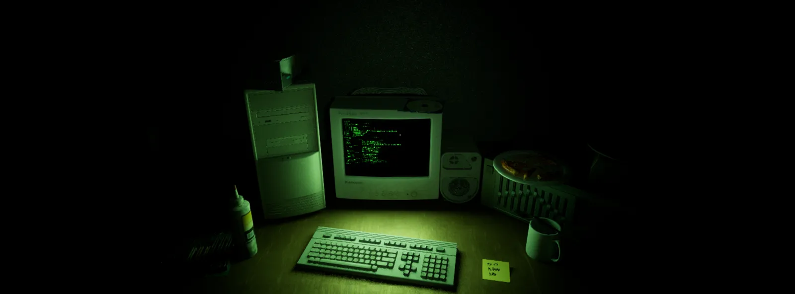
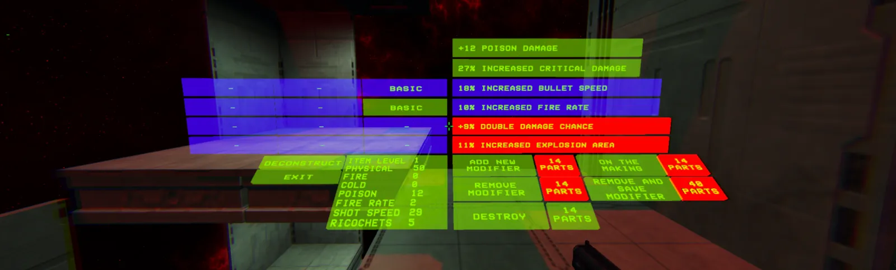
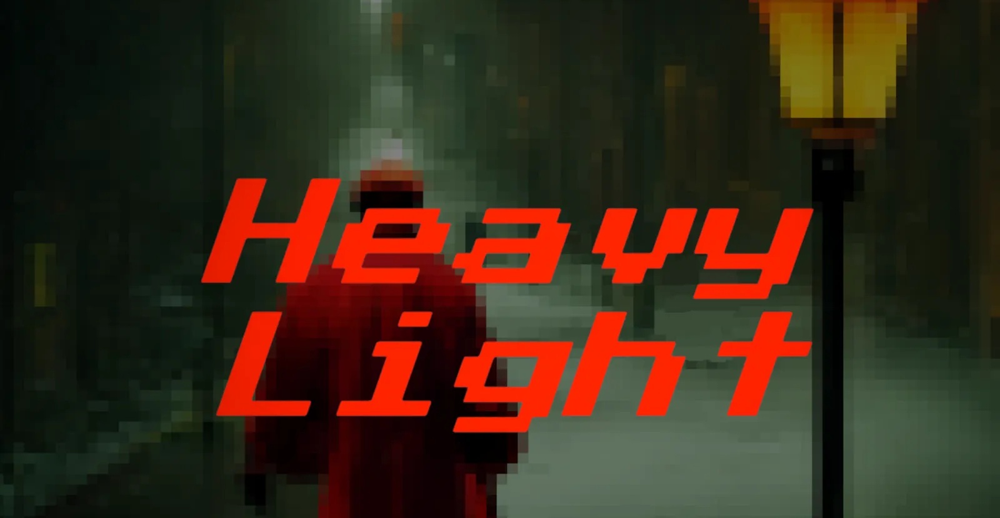
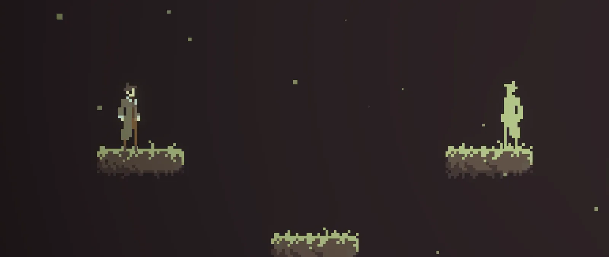

Sebastião Freitas — Braga, Portugal
Games, mechanics, and a tabletop setting I've been running for years. This is a piece of it — a bridge across the void, anchored at one end by a god who became matter.

OBJ_0001A horror game where the debug console is the main mechanic. Full in-game Linux-style terminal with command history; edit any object's properties at runtime — set weight negative and it leaves the floor.

OBJ_0002First-person roguelike. The second loop scales on player skill instead of stats, so a lucky build can't delete a boss in one shot. 50+ gameplay modifiers, craftable weapons that persist between runs.

OBJ_00032D puzzle platformer built around one rule: light carries momentum. It pushes crates, and it pushes you. Shipped for WebGL and reused as the base for Conclusus.

OBJ_000430 levels and four new mechanics on top of the HeavyLight base, built in less time than the original. The point of the exercise was proving the base was actually reusable.